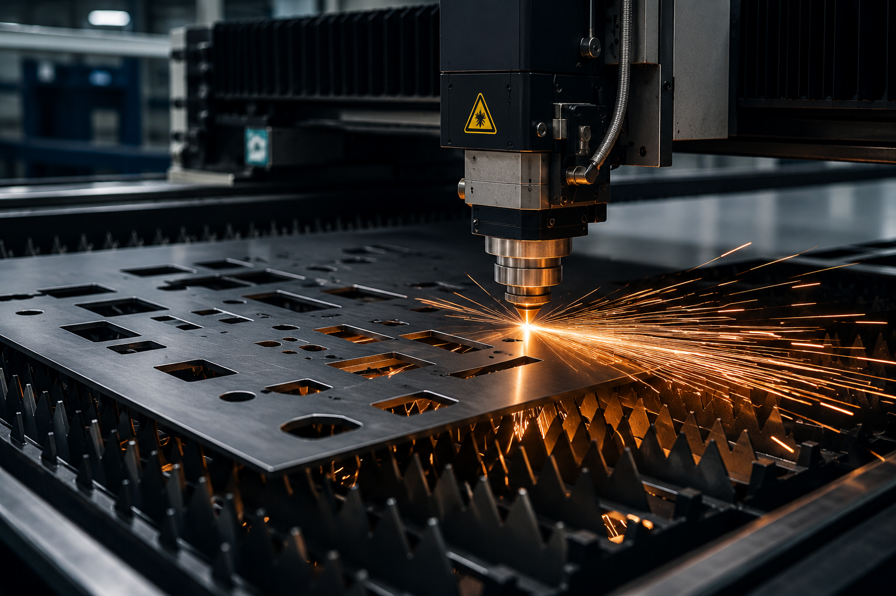

Sac Lazer Kesim
Teknik çizime göre sac parçaların hassas ölçülerde kesilmesi ve üretim sürecine hazır hale getirilmesi. Farklı kalınlık ve malzeme gruplarında kesim yapılmaktadır.
Kullanım Alanları
Hizmeti İncele